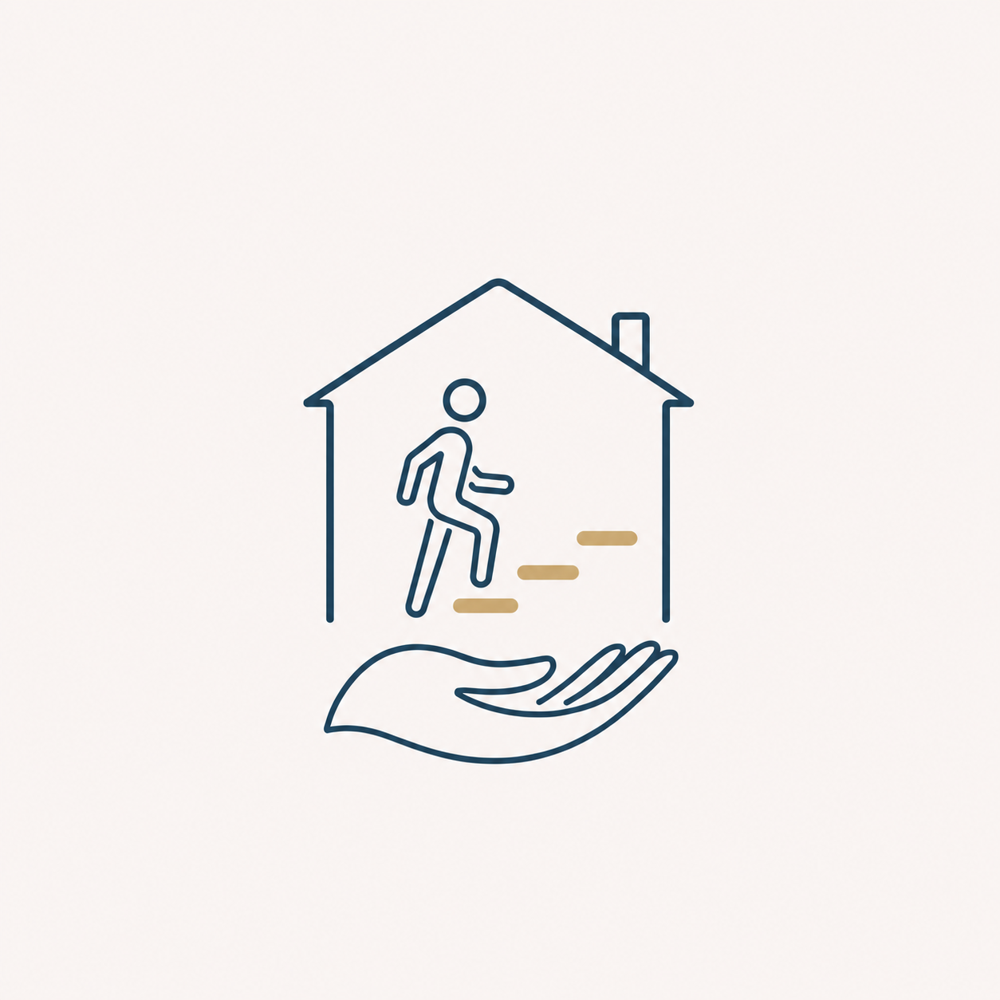

Immutable supplied symbol

2048 × 640 exact PNG
512 × 160 exact PNG
Exact-artwork approval record
Melanie Watsham approved both exact PNG files without changes on 2026-08-04. This does not clear the proposed public name, credentials, contact information, source-image rights or any other public-use requirement.
- The supplied symbol, pale background and glow remain visually unchanged.
- No visible square or seam appears around the cropped symbol.
- The house, figure, three steps and four fingers remain distinct at 512 pixels.
- The wordmark and endorsement are legible at both sizes.
- The composition is balanced and nothing is clipped or overlapping.